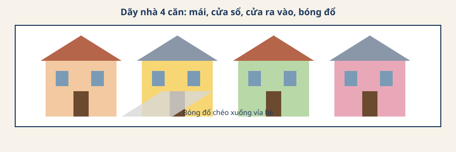

Vẽ nhà và phố nhỏ: nhà, cửa sổ, bóng đổ và người qua đường
Tác giả: Ruler
Nhà là chủ đề nhiều người mới sợ nhất, vì nhà có đường thẳng và góc vuông, mà tay người mới thường vẽ đường thẳng không thẳng. Bài này dạy bạn vẽ nhà bằng hình khối đơn giản: hình vuông, hình chữ nhật và hình tam giác. Bạn không cần vẽ đúng kiến trúc. Bạn vẽ một dãy nhà nhỏ với cửa sổ, mái ngói, bóng đổ và vài người qua đường, trong khoảng 30 phút. Bạn dùng lại kỹ thuật vẽ trên giấy khô trong bài "Vẽ trên giấy khô (wet-on-dry): nét sắc, chồng lớp, chi tiết" cho cửa sổ và mái ngói, và kỹ thuật vẽ âm bản trong bài "Vẽ cây và tán lá: cây lá rộng, cây thông và rừng thông" cho ánh sáng qua cửa sổ.

Sơ đồ minh họa được vẽ riêng cho website — không phải ảnh chụp tranh thật. Sơ đồ dãy 4 nhà: mái hình tam giác, cửa sổ hình chữ nhật, cửa ra vào, bóng đổ chéo xuống vỉa hè.
Vẽ nhà bằng hình khối, không vẽ từng viên gạch
Nhà vẽ bằng 4 hình: hình vuông cho thân nhà, hình chữ nhật cho cửa sổ và cửa ra vào, hình tam giác hoặc hình thang cho mái nhà, hình bình hành cho mái nhà nhìn nghiêng. Bạn phác thảo nhẹ bằng bút chì HB, đừng ấn mạnh. Các hình chồng lên nhau: nhà ở phía sau cao hơn nhà ở phía trước, nhà ở phía trước che một phần nhà ở phía sau. Bạn chừa khoảng trời ở phía trên cho mái nhà cao nhất.
Phil Maltz viết trên Cass Art rằng bạn bắt đầu bằng cách tạo một lưới chia dãy nhà thành 4 phần: mái nhà, tầng một, tầng trệt và vỉa hè, rồi tạo vạch dọc chia dãy nhà thành 4 căn riêng. Lưới vẽ bằng bút fineliner, không dùng thước kẻ, vì nét hơi lệch một chút làm nhà trông có sức sống hơn nét thẳng hoàn hảo.
Bạn dùng giấy màu nước 300 gsm, cold press, khổ nhỏ. Bạn cần bút fineliner chống nước, cọ tròn cỡ 8 cho mảng lớn, cọ dẹt vừa cho cửa sổ và mái nhà, cọ tròn nhỏ cỡ 2–4 cho chi tiết, và bút màu trắng hoặc màu trắng gouache với cọ đầu nhọn cho chi tiết trắng. Bạn cũng cần khăn giấy và hai lọ nước.
7 bước vẽ dãy nhà
Bạn vẽ dãy nhà trong 7 bước theo Phil Maltz.
Bước 1: khung fineliner. Bạn tạo lưới chia dãy nhà thành mái nhà, tầng một, tầng trệt và vỉa hè, với vạch dọc chia thành 4 căn nhà riêng.
Bước 2: lớp màu nền. Bạn pha màu xám xanh cho mái nhà, màu nâu nhạt cho nền gạch, 4 màu pastel cho mặt tiền, và màu xám nhạt cho vỉa hè. Bạn tô màu lên lưới. Bạn để mỗi màu khô hẳn trước khi tô màu tiếp theo để tránh màu lem vào nhau.
Bước 3: vạch fineliner cho cửa sổ và cửa ra vào. Khi màu đã khô hẳn, bạn vẽ vạch mới để đánh dấu vị trí cửa sổ và cửa ra vào. Bước này giúp bạn khi thêm ngói và gạch, vì bạn chừa trống những vùng này.
Bước 4: tô cửa sổ và cửa ra vào. Bạn dùng cọ dẹt vừa, pha màu tối từ xanh ultramarine trộn nâu đất cho cửa sổ. Bạn tô màu bạn chọn cho 4 cánh cửa và bậc thềm. Bạn đừng tô cửa sổ bằng màu đen tuýp, vì màu đen tuýp làm cửa sổ phẳng và chết, giống như bài "Vẽ cây và tán lá: cây lá rộng, cây thông và rừng thông" đã dạy về bóng tối: bạn pha màu tối từ xanh ultramarine và nâu đất thay vì dùng màu đen tuýp.
Bước 5: kết cấu ngói và gạch. Bạn dùng cọ dẹt nhỏ, vẽ từng hàng nét ngắn cho ngói mái và gạch tường. Bạn tập thử trên giấy nháp trước, thử các cỡ cọ khác nhau để xem cỡ nào và màu nào hợp. Bạn giữ ngói mái hình vuông và gạch hơi dài hơn. Bạn nhớ xếp so le các hàng để tạo hoa văn thật hơn. Bạn tô lại một số viên ngói và viên gạch để tạo độ đậm nhạt khác nhau.
Bước 6: chi tiết trắng, khung cửa sổ. Bạn thêm chi tiết trắng bằng bút màu trắng hoặc màu trắng gouache với cọ đầu nhọn, vẽ khung cửa sổ và viền trắng.
Bước 7: chi tiết nét đen, mặt tiền, lan can và ăng-ten. Khi mọi thứ đã khô, bạn thêm nét cuối bằng bút màu trắng hoặc bút fineliner: lan can vẽ bằng nét mảnh, ăng-ten hơi nghiêng một chút cho có sức sống, và các tấm ốp tường.
Bạn luôn vẽ xong những gì đã bắt đầu, vì luôn có điều gì đó để học từ bức tranh, dù bức tranh đẹp hay xấu. Bạn đừng bỏ dở giữa chừng vì nghi ngờ bản thân.
Bóng đổ làm nhà có chiều sâu
Bóng đổ là thứ làm nhà trông thật, không phải cửa sổ hay ngói. Ashwani Verma viết trên Artists & Illustrators rằng bóng đổ là chìa khóa: bóng tạo tương phản, chiều sâu và dẫn dắt toàn bộ bức tranh. Bạn vẽ bóng đổ trong 3 bước.
Bước 1: lớp đầu tiên. Bạn bắt đầu bằng lớp wash nhạt để đặt tông nền cho bức tranh. Bạn dùng vàng đất phủ toàn bộ tòa nhà chính để tạo tông ấm, rồi thêm màu đỏ cho vùng bóng. Ở tiền cảnh, bạn tô hỗn hợp nhạt gồm đỏ và nâu đất, thêm một chút màu trung tính để gợi bóng mềm, tự nhiên.
Bước 2: bóng trên tòa nhà chính. Bạn tập trung vào bóng của tòa nhà chính. Bạn pha bóng từ nâu đất, tím và một chút màu trung tính. Bạn bắt đầu từ trên xuống, tăng dần độ đậm của màu bằng cách thêm nhiều màu hơn và ít nước hơn. Cách này tạo bóng đậm và thật.
Bước 3: bóng đổ xuống đất và bóng tiền cảnh. Bóng đổ xuống phía bên trái và nền nhà: bạn tô một lớp nước sạch lên tòa nhà bên trái trước, rồi thêm màu đặc khi giấy còn ẩm. Khi bạn vẽ xuống dưới, bạn tăng dần lượng màu. Bóng tiền cảnh vẽ bằng hỗn hợp đặc gồm nâu đất, một chút xanh ultramarine Pháp và một chút xanh turquoise. Khi màu còn ẩm, bạn vẩy nước sạch lên để tạo kết cấu thú vị, rồi dùng kỹ thuật cọ khô lấy bớt màu ra để gợi đường nét và chi tiết bề mặt.
Bạn nhớ bóng đổ luôn nằm ở phía đối diện nguồn sáng. Bạn quyết định ánh sáng đến từ hướng nào trước khi vẽ bóng, và giữ nguyên hướng đó cho toàn bộ bức tranh. Bạn đừng vẽ bóng của nhà này đổ sang trái mà bóng của nhà kia đổ sang phải.
Người qua đường và xe cộ: gợi ý, không vẽ chi tiết
Bạn vẽ người qua đường và xe cộ bằng gợi ý, không vẽ chi tiết. Ashwani Verma viết rằng bạn vẽ người và xe bằng nét lỏng với ít chi tiết, và chừa kính chắn gió màu trắng để giữ điểm sáng nhất và thêm sức sống cho bức tranh. Người vẽ bằng 3 nét: một nét dọc cho thân, một chấm tròn cho đầu, hai nét ngắn cho chân; xe vẽ bằng một hình chữ nhật và hai hình tròn cho bánh xe.
Người và xe vẽ sau khi nhà đã khô hẳn, và chỉ vẽ vài người, không vẽ kín phố. Một phố có 3 người và 1 chiếc xe trông sống động hơn phố có 20 người vẽ vội. Bạn đặt người ở tiền cảnh lớn hơn, người ở xa nhỏ hơn, và bạn vẽ người ở xa bằng màu nhạt hơn.
Cột đèn, biển hiệu và dây điện vẽ bằng nét fineliner sau khi màu đã khô — cột đèn là một đường dọc với một chấm tròn ở đầu. Biển hiệu là hình chữ nhật nhỏ với một màu tươi. Bạn đừng vẽ chữ lên biển hiệu, vì chữ nhỏ sẽ lem và làm bức tranh rối.
Phố sau mưa
Phố sau mưa vẽ bằng cách thêm mặt đường ướt phản chiếu. Bạn dùng kỹ thuật trong bài "Vẽ nước: sông, biển, mưa — mặt nước phẳng, gợn sóng và phản chiếu": mặt đường ướt phản chiếu như gương, bóng của nhà và người nằm ngay dưới vật thật, tối hơn và lạnh hơn vật thật một chút. Bạn tô mặt đường bằng màu xám xanh nhạt, rồi vẽ bóng nhà bằng nét dọc ngắn, và thêm vài vệt sáng trắng bằng cách lấy màu ra khi còn ướt.
Bầu trời sau mưa chỉ cần một mảng xám nhạt, không vẽ mây trắng. Mây xám chấm bằng hỗn hợp xanh ultramarine và nâu đất vào bầu trời còn ướt, giống như mây bão trong bài "Vẽ mây và bầu trời: mây trắng, mây bão, hoàng hôn".
Lỗi thường gặp
Nhà trông như hộp giấy. Bạn thiếu bóng đổ. Bạn thêm bóng ở một phía của nhà và bóng đổ xuống đất.
Cửa sổ không thẳng hàng. Lưới chia nhà vẽ trước khi tô màu, và vạch cửa sổ vẽ sau khi lớp nền đã khô.
Ngói và gạch vẽ quá đều. Bạn xếp so le các hàng, tô lại một số viên để tạo độ đậm nhạt khác nhau, và chừa vài chỗ trống.
Người qua đường trông như que diêm. Người vẽ bằng 3 nét đơn giản, không vẽ tay chân chi tiết, và đặt đúng tỷ lệ với nhà: người cao khoảng một phần ba chiều cao tầng trệt.
Bức tranh quá nhiều chi tiết. Bạn chỉ vẽ chi tiết ở nhà chính, nhà phụ vẽ lỏng và ít chi tiết hơn. Bạn nhớ quy tắc: chi tiết ở gần, gợi ý ở xa.
Nhà vẽ theo thứ tự từ xa đến gần: nhà xa trước với tông nhạt và ít chi tiết, nhà giữa sau, nhà chính cuối cùng với màu đậm nhất và chi tiết nhất. Bạn để mỗi lớp khô hẳn trước khi vẽ lớp tiếp theo.
Bài tập: dãy nhà 4 căn trong 30 phút
Bạn vẽ một dãy nhà 4 căn trong 30 phút, đặt hẹn giờ và dừng đúng giờ. Bạn dùng lưới chia nhà thành mái nhà, tầng một, tầng trệt và vỉa hè. Bạn tô 4 màu pastel khác nhau cho 4 mặt tiền, rồi tô cửa sổ bằng màu tối pha từ xanh ultramarine và nâu đất, vẽ ngói và gạch bằng nét ngắn xếp so le, và thêm 3 người qua đường bằng 3 nét đơn giản. Bạn đặt hẹn giờ và dừng đúng 30 phút, dù bức tranh chưa xong. Bạn sẽ thấy mình vẽ được nhiều hơn mình nghĩ trong 30 phút, và lần sau bạn sẽ vẽ nhanh hơn.
Kết luận
Nhà vẽ bằng hình khối đơn giản: hình vuông, hình chữ nhật, hình tam giác và hình bình hành. Bạn vẽ lưới chia nhà trước, tô lớp nền rồi mới vẽ cửa sổ, ngói và gạch. Bóng đổ làm nhà có chiều sâu: bạn pha bóng từ nâu đất, tím và màu trung tính, và giữ nguyên hướng ánh sáng cho toàn bộ bức tranh. Người qua đường và xe cộ chỉ cần gợi ý bằng vài nét, không cần chi tiết.
Bài tiếp theo, bài "Vẽ động vật nhỏ: chim, cá, mèo — vẽ bằng hình khối đơn giản", dùng cùng cách vẽ bằng hình khối này cho động vật: chim vẽ bằng hình bầu dục, cá vẽ bằng hình bầu dục và tam giác, mèo vẽ bằng hình tròn và tam giác.
Nguồn tham khảo
- Phil Maltz, Cass Art, "How to: Watercolour illustrated houses with artist Phil Maltz" — 7 bước vẽ dãy nhà (lưới fineliner chia mái/tầng một/tầng trệt/vỉa hè và 4 căn; lớp nền 4 màu pastel + mái xám xanh + nền gạch nâu nhạt + vỉa hè xám nhạt, để khô giữa các màu; vạch cửa sổ sau khi khô; cửa sổ màu tối; ngói vuông và gạch dài xếp so le; chi tiết trắng bằng bút Posca hoặc gouache trắng; nét fineliner lan can và ăng-ten); 3 mẹo (khăn giấy thấm màu, hai lọ nước, vẽ xong những gì đã bắt đầu): https://www.cassart.co.uk/blog/how-to-watercolour-illustrated-houses-with-artist-phil-maltz
- Ashwani Verma, Artists & Illustrators, "How to paint a street scene in watercolour" — phác thảo là bước quan trọng nhất; bầu trời xanh ultramarine; lớp đầu vàng đất tạo tông ấm; bóng tòa nhà chính từ nâu đất + tím + màu trung tính, tăng đậm dần từ trên xuống; bóng đổ xuống đất bằng cách tô nước sạch trước rồi thêm màu đặc; bóng tiền cảnh nâu đất + xanh ultramarine Pháp + xanh turquoise, vẩy nước sạch và cọ khô lấy màu; người và xe gợi ý bằng nét lỏng, chừa kính chắn gió trắng; chi tiết nhà chính vẽ lỏng, thêm cờ làm điểm nhấn: https://www.artistsandillustrators.co.uk/how-to/how-to-paint-a-street-scene-in-watercolour/